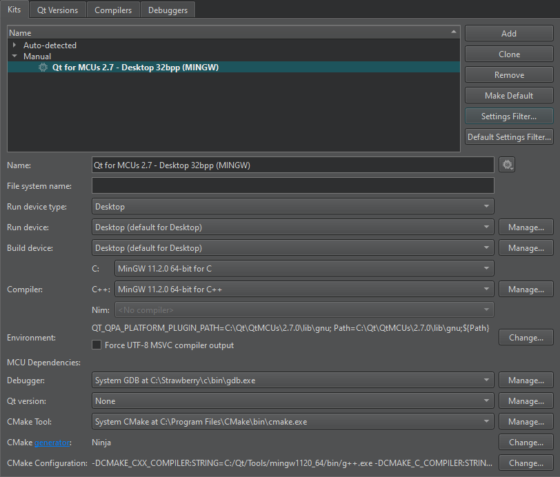

Manage MCU Kits
Note: Enable the McuSupport plugin to develop for MCUs.
Qt Creator automatically adds kits for all the available MCU targets if you select Automatically create kits for all available targets on start in Preferences > Devices > MCU.

Note: When you update the Qt for MCUs SDK, Qt Creator asks you whether you want to replace the existing kits or create additional kits. To do this manually for each target, select Update Kit or Create Kit.
To add new kits, go to Preferences > Devices > MCU, and select Create Kit. This adds the paths to the kit's toolkits and SDKs, and keeps them synchronized when you select Apply or OK.
Change or remove MCU kits
To change or remove individual kits, go to Preferences > Kits.
The MCU dependencies field displays paths to 3rd party software required for MCU development with the current kit.
See also Enable and disable plugins, How To: Develop for MCUs, and Developing for MCUs.